一维固结
注意
本示例的项目文件可在 FLAC3D 中查看/运行。[1] 该项目的主数据文件见本示例末尾（main data files）。
厚度为 \(H\) = 20 m（见图 1（Figure 1））、水平范围很大的饱和土层位于刚性不透水基座之上。在不排水条件下，于该土层上施加恒定的表面荷载 \(p_z\) = 105 Pa。土骨架为均质且呈弹性行为；采用各向同性达西输运定律。所施加的压力最初由流体承担，但随时间推移，流体通过土层表面排出，将荷载传递给土骨架。该一维固结问题的解可在 Biot 理论框架内表达（见 Detournay 和 Cheng，1993）。
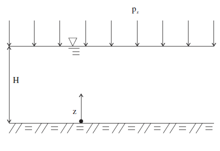
图 1：一维固结。
孔隙压力 \(p\) 的扩散方程形式为
| 其中： | \(c\) | = | \(k/S\); |
| \(S\) | = | \(1/M + \alpha^2/\alpha_1\) = 储水系数； | |
| \(\alpha_1\) | = | \(K + 4G/3\); | |
| \(M\) | = | Biot 模量；以及 | |
| \(\alpha\) | = | Biot 系数。 |
边界条件为：在 \(z\) = H 处 \(\sigma_{zz}\) = \(-p_z H(t)\) 且 \(p\) = 0（其中 \(H(t)\) 为阶跃函数）；在 \(z\) = 0 处 \(u_z\) = 0 且 \({{\partial p}\over{\partial z}}\) = 0。
由于应力恒定，方程(1)简化为
其边界条件为：在 \(z = H\) 处 \(p\) = 0，且在 \(z\) = 0 处 \({{\partial p}\over{\partial z}}\) = 0。
由土层加载引起的孔隙压力的初始值 \(p_0\)，可通过流体本构定律（\(p = M(\zeta - \alpha {\epsilon}_{zz})\)）推导：考虑不排水条件（\(\zeta\) = 0），并利用一维力学本构定律（\({\sigma}_{zz} = \alpha_1 {\epsilon}_{zz} - \alpha p\)）将应变表示为应力的函数。其表达式为
孔隙压力的解为
| 其中： | \(\hat{p}\) | = | \(p/p_z\); |
| \(a_m\) | = | \((2 m +1)\pi/2\); | |
| \(\hat{z}\) | = | \((H-z)/H\)；以及 | |
| \(\hat{t}\) | = | \(ct/H^2\). |
竖向位移 \(u_z\) 可通过联立平衡方程 \(\partial {\sigma}_{zz} / \partial z\) = 0 与力学本构方程 \({\sigma}_{zz} = \alpha_1 {\epsilon}_{zz} - \alpha p\) 求得。将 \({\epsilon}_{zz}\) 表示为 \(\partial u_z / \partial z\) 后，考虑方程(4)及边界条件进行积分，可得
这里，\({\hat{u}}_z\) 定义为 \({\hat{u}}_z = {{\alpha_1 u_z}\over{H p_z}}\)。
本算例规定了以下物性：
| 干态体积模量，\(K\) | 5 × 108 Pa |
| 干态剪切模量，\(G\) | 2 × 108 Pa |
| Biot 模量，\(M\) | 4 × 109 Pa |
| Biot 系数，\(\alpha\) | 1.0 |
| 渗透率，\(k\) | 10-10 m2/Pa-sec |
本问题的 FLAC3D 模型网格为沿 \(z\) 轴排列的 20 个单位尺寸网格单元组成的柱体。（见图 2（Figure 2）。）柱体底部固定，侧向位移在 \(x\) 和 \(y\) 方向受到约束。在柱体顶部施加力学压力 \(p_z\)。
首先阻止流动，并将模型计算至平衡，以建立初始不排水条件。在该阶段结束时，应力 \({\sigma}_{zz}\) 的值为 \(-p_z\)，与所施加的压力相平衡，孔隙压力为初始不排水值 \(p_0 = \alpha p_z/\alpha_1 S\)（见图 3（Figure 3））。随后通过将柱体顶部的孔隙压力设为零来允许排水。FLAC3D 模型被循环计算至 5000 秒的流动时间，这大约是本问题特征时间 \(t_c = H^2/c\) 的量级。
柱体中部高度处孔隙压力 \(\hat{p}\) 和竖向位移 \({\hat{u}}_z\) 的解析解通过 FISH 函数计算，并随时间推进与数值解进行比较。结果随流体流动时间的曲线绘于图 3（Figure 3） 和 图 4（Figure 4）。孔隙压力向有效应力的转移示于图 5（Figure 5），其中给出了归一化总应力 \(-{\sigma}_{zz} / p_z\)、有效应力 \(-({\sigma}_{zz} + p) / p_z\) 和孔隙压力 \(p / p_z\) 随流体流动时间的演化。FLAC3D 数据文件列于“1DConsolidation-Coupled.dat”。

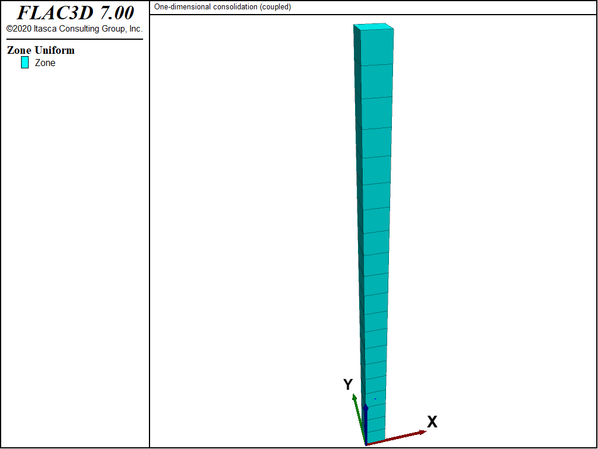
图 2：一维固结的 FLAC3D 网格。

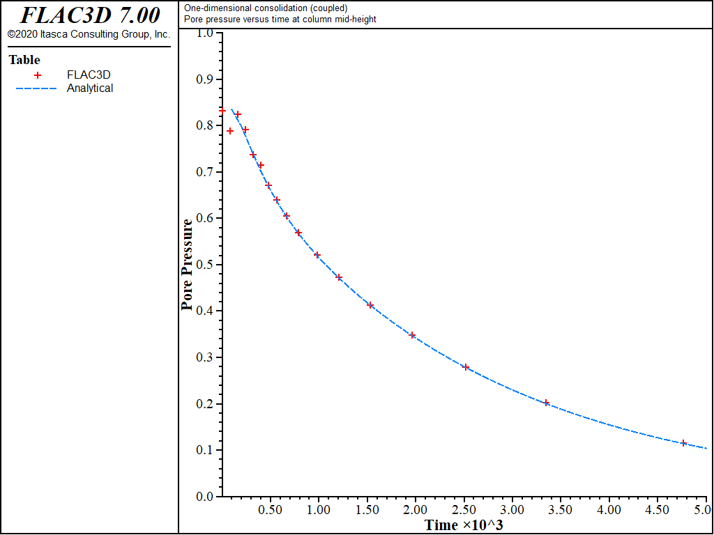
图 3：一维固结试验中孔隙压力解析值与数值值的比较——\(M\) = 4 × 109 Pa。

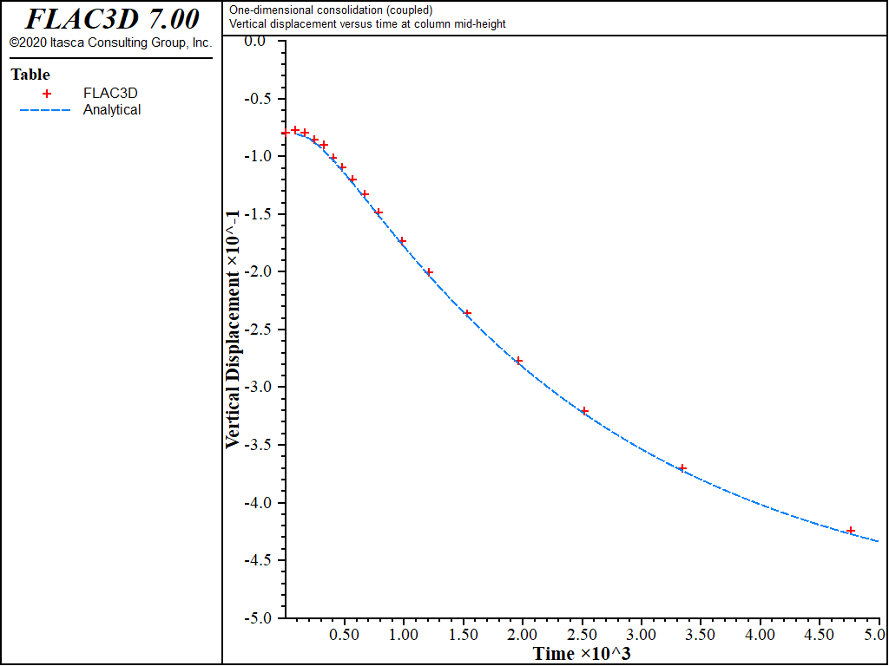
图 4：一维固结试验中竖向位移解析值与数值值的比较——\(M\) = 4 × 109 Pa。

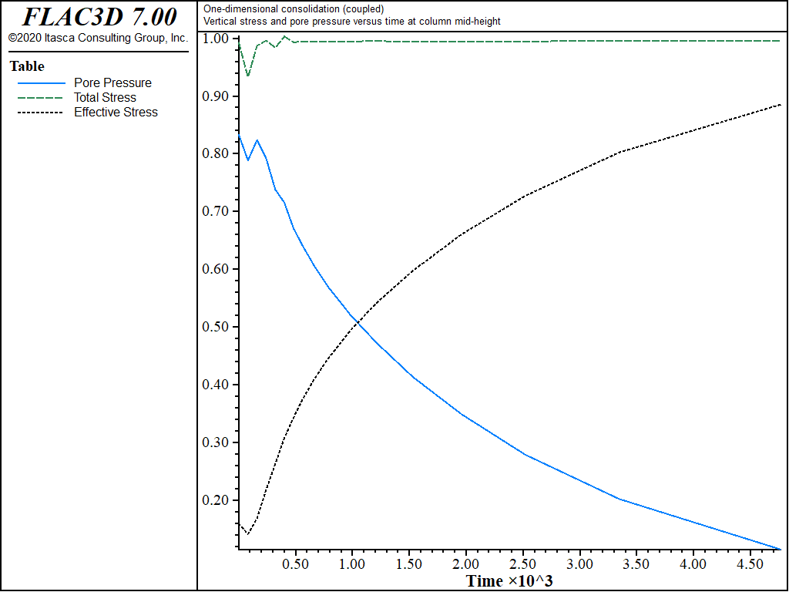
图 5：一维固结试验中孔隙压力、总应力和有效应力的演化——\(M\) = 4 × 109 Pa。
请注意，随着刚度比 \(R_k = \alpha^2 M/(K + 4G/3)\) 的增大，应增加网格单元数量以保持较小的误差。这一效应源于 配置流体计算模式（model configure fluid） 中用于计算体积应变所引起的孔隙压力变化的数值技术。此外，随着比值 \(R_k\) 的增大，时步将减小。然而，为在不过多影响解的前提下保持误差较小且时步足够大，可以将模拟中所用的 Biot 模量（或 \(K_f\)）限制为约等于 \((K + 4G/3)/{\alpha^2}\) 的二十倍（见求解仅流动问题与耦合流动问题中的第五项（the fifth item））。为证明该数值方法的有效性，将 \(M\) = 1.5 × 1010（\(R_k \simeq\) 20）和 \(M\) = 1.5 × 1015（\(R_k \simeq\) 20 × 105）所对应的孔隙压力和位移解析解在图 6（Figure 6） 和 图 7（Figure 7） 中作了比较。如这些图所示，两者的响应确实相似（最大相对误差小于 5%）。

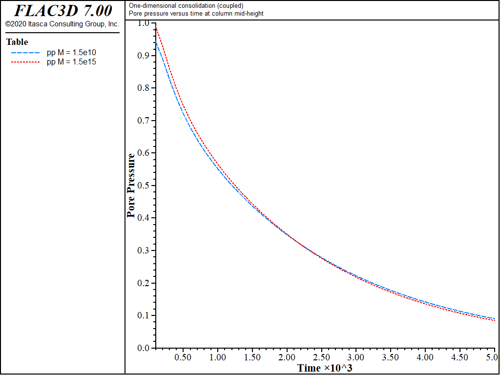
图 6：一维固结试验中两个较大 M 值下孔隙压力解析解的比较。

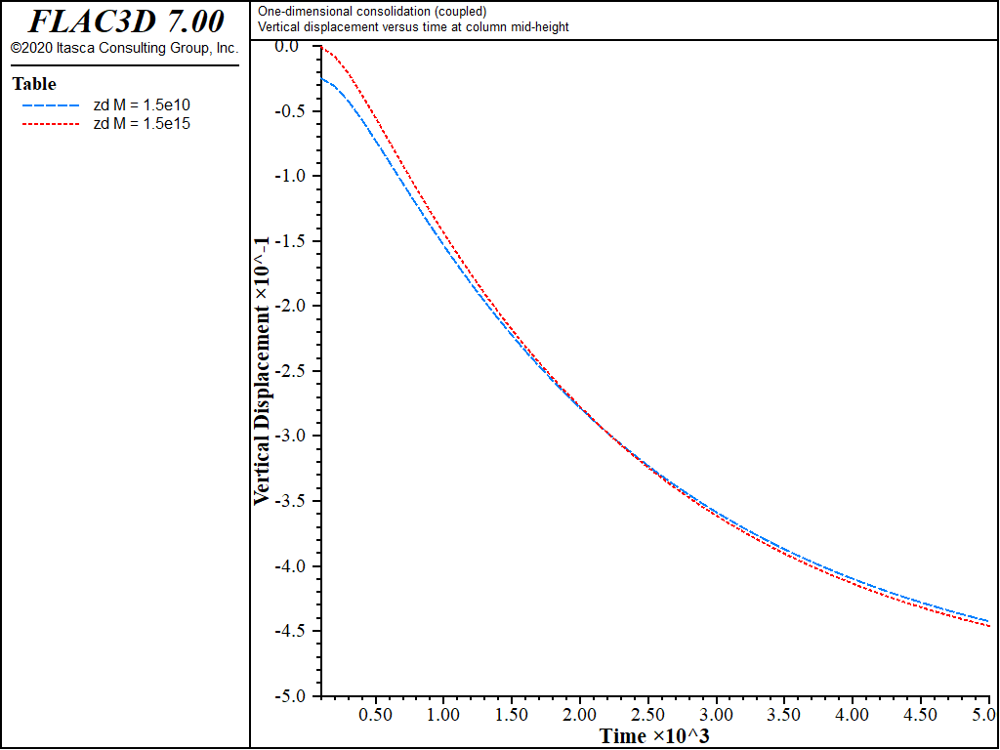
图 7：一维固结试验中两个较大 M 值下竖向位移解析解的比较。
对于远大于 20 的刚度比 \(R_k\) 值，耦合流体流动基本算法的收敛将非常缓慢（即每个流动步之后都需要大量力学步才能使系统达到力学平衡）。通过以 Biot 模量 \(M\) = 4 × 1010 Pa（比前面的数值计算大 10 倍，见1DConsolidation-Coupled10M.dat）重复该耦合试验可以说明这一点。在前面的计算中 \(M\) = 4 × 109 Pa（\(R_k\) = 5.2），耦合流动计算运行约 4 秒（在 1.6 GHz i7 计算机上）。对于 \(M\) = 4 × 1010 Pa（\(R_k\) = 52）的计算，计算时间约为 40 秒（慢十倍）。\(M\) = 4 × 1010 Pa 时孔隙压力和位移时程结果与解析解的比较分别示于图 8（Figure 8） 和 图 9（Figure 9）。最大相对误差小于 4%。

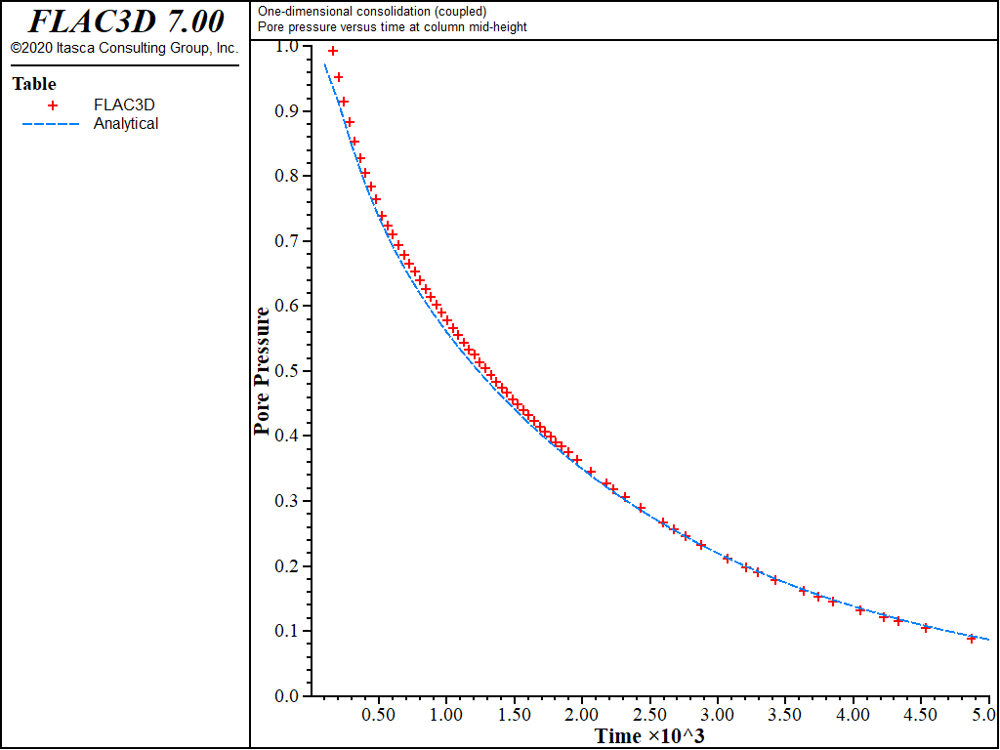
图 8：一维固结试验中孔隙压力解析值与数值值的比较——\(M\) = 4 × 1010 Pa。

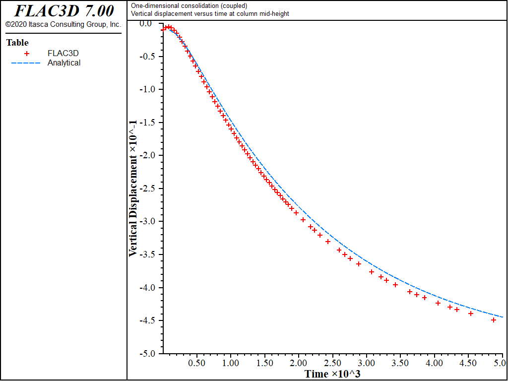
图 9：一维固结试验中竖向位移解析值与数值值的比较——\(M\) = 4 × 1010 Pa。
采用刚度比（Stiffness Ratio）中所述的非耦合技术可以缩短求解时间（非耦合技术适用于本问题，是因为该解具有无旋特性）。在本试验（1DConsolidation-Uncoupled.dat）中，使用非耦合技术对 Biot 模量 4 × 1010 Pa 重复了数值模拟。在该试验中，初始不排水条件通过采用材料的 undrained 体积值并将 Biot 模量设为零来获得。随后将在该计算模式下不更新的孔隙压力初始化为值 \(p_0\)。其余模拟分十个时间增量进行，以便记录各变量的时程。在每个增量中，流体流动计算进行 500 秒的时间段。在该阶段，使用缩放后的 Biot 模量以保持耦合系统的真实扩散率（见该方程（this equation））。接着，将 Biot 模量设为零以防止进一步产生孔隙压力，并使用体积模量的 drained 值将系统计算至力学平衡。重复流体与力学计算，直至总模拟时间达到 5000 秒。该模拟（不涉及任何由体积应变引起孔隙压力变化的直接计算）的结果示于图 10（Figure 10） 至图 12（Figure 12）。该非耦合模拟的计算时间约为 4 秒。最大相对误差小于 1%。

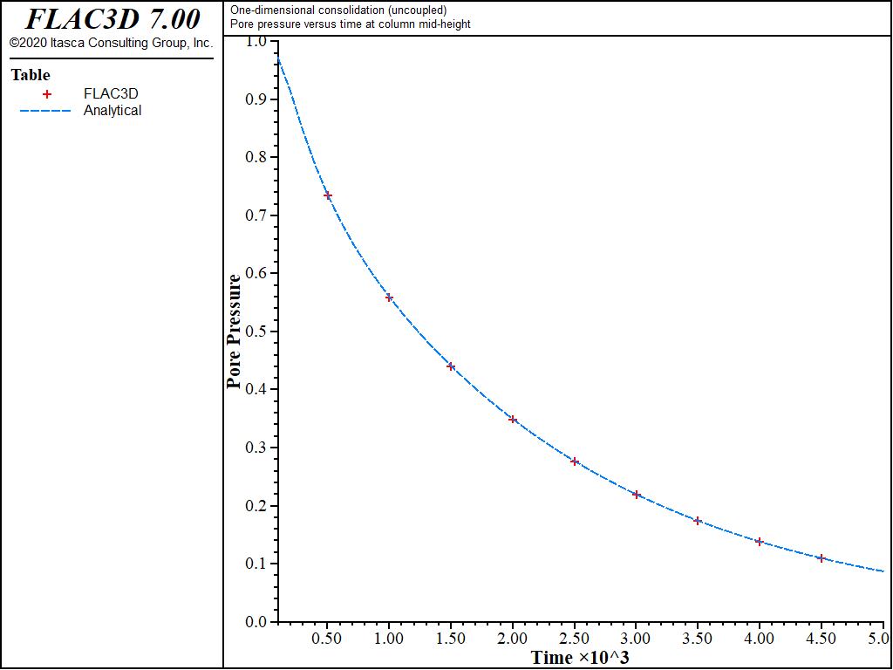
图 10：一维固结试验中孔隙压力解析值与数值值的比较——\(M\) = 4 × 1010 Pa。

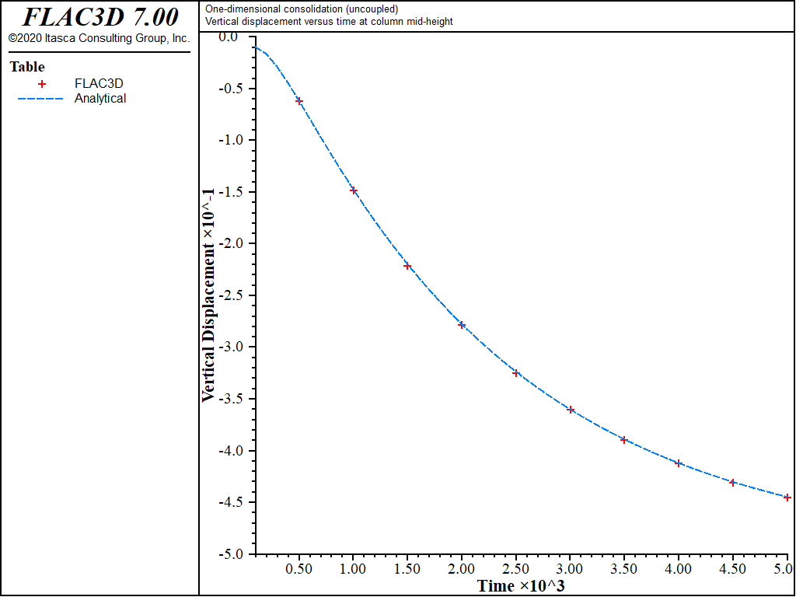
图 11：一维固结试验中竖向位移解析值与数值值的比较——\(M\) = 4 × 1010 Pa。

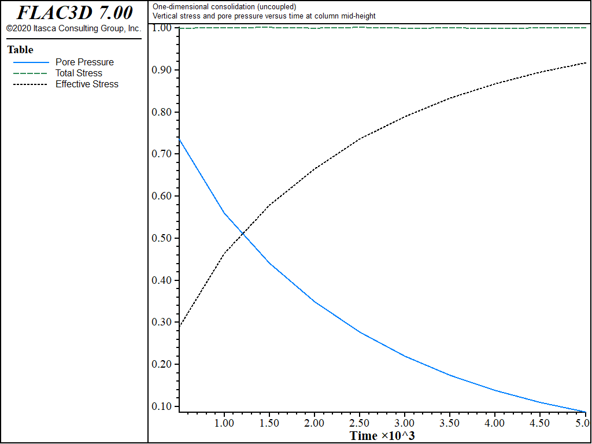
图 12：一维固结试验中孔隙压力、总应力和有效应力的演化——\(M\) = 4 × 1010 Pa。
本示例涉及完全饱和的耦合流动。在此类情况下，采用完全饱和快速流动（Fully Saturated Fast Flow）中所述的 saturated fast-flow 算法可以缩短求解时间。该算法通过使用 单元流体快速流动命令（zone fluid fastflow） 开启（on） 命令来选择。若对 \(M\) = 4 × 1010 Pa（\(R_k\) = 52）的 1DConsolidation-Coupled.dat 使用该命令重复计算，运行时间现在约为 12 秒（见1DConsolidation-FastFlow.dat）。随着 \(R_k\) 的增大，使用快速流动算法越来越有利。
快速流动计算的结果示于图 13（Figure 13） 和 图 14（Figure 14）。最大相对误差小于 2%。

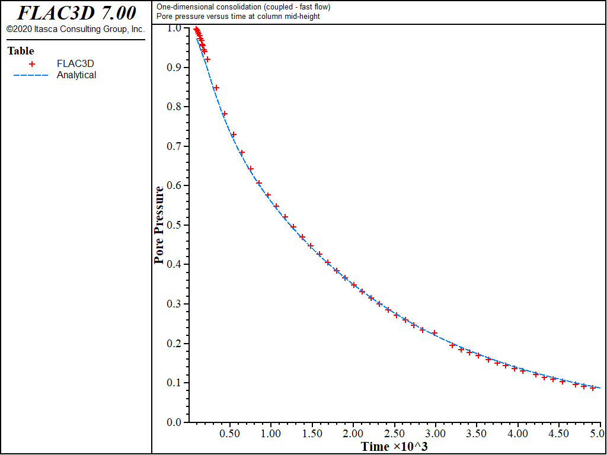
图 13：一维固结试验中孔隙压力解析值与数值值的比较。

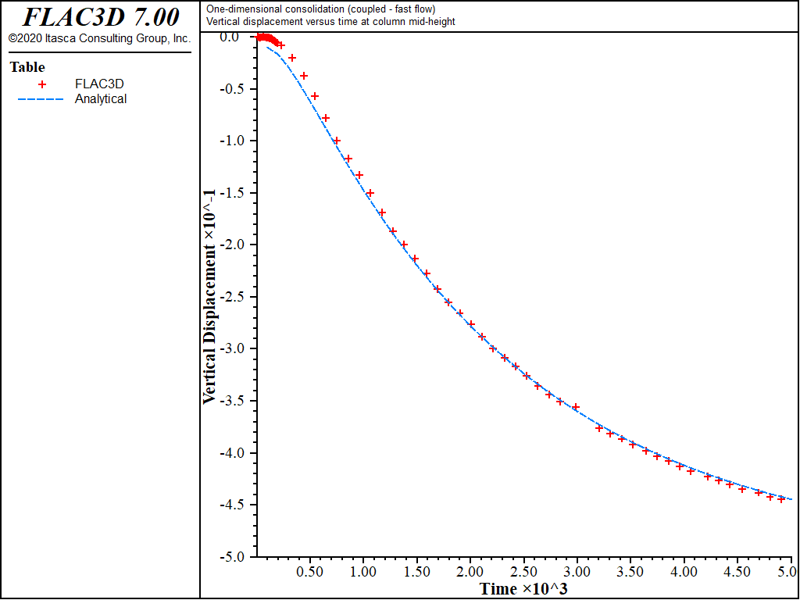
图 14：一维固结试验中竖向位移解析值与数值值的比较。
参考文献
Detournay, E., and A. H. D. Cheng. “Fundamentals of Poroelasticity,” in Comprehensive Rock Engineering, Vol. 2, pp. 113-171. J. Hudson et al., eds. London: Pergamon Press (1993).
数据文件
1DConsolidation-Coupled.dat
model new
model large-strain off
model title "One-dimensional consolidation (coupled)"
fish automatic-create off
model configure fluid
program call 'fishFunctions'
[setup(4.0e9)]
; --- 模型几何形状 ---
zone create brick size 1 1 [int(hh)]
zone face skin
; --- 力学模型 ---
zone cmodel assign elastic
zone fluid biot on
zone property bulk [c_bulk] sh [c_shear]
zone face apply velocity-x 0.0 range group 'West' or 'East'
zone face apply velocity-y 0.0 range group 'North' or 'South'
zone face apply velocity-z 0.0 range group 'Bottom'
zone initialize stress-zz 0.
zone face apply stress-zz [sig0] range group 'Top'
; --- 流体流动模型 ---
zone fluid cmodel assign isotropic
zone fluid property permeability [c_perm] biot [c_biotc]
zone gridpoint initialize biot [c_biotm]
zone gridpoint initialize pore-pressure 0
; --- 首先建立不排水响应 ---
model fluid active off
model solve ratio 1e-4
; --- 历程 ---
history interval 200
fish history pp10
fish history c_szz
fish history c_eszz
fish history c_uz
fish history ft
; --- 排水响应 ---
zone face apply pore-pressure 0 range group 'Top'
model fluid active on
model fluid substep 1
model mechanical substep 1
model mechanical slave on
model solve fluid time-total 500 or mechanical ratio 1e-4
model fluid substep 100
model mechanical substep 10
model mechanical slave on
model solve fluid time-total 5000 or mechanical ratio 1e-4
history export '1' vs '5' table '1'
history export '4' vs '5' table '2'
history export '2' vs '5' table '3'
history export '3' vs '5' table '4'
table '1' label 'Pore Pressure'
table '2' label 'Vertical Displacement'
table '3' label 'Total Stress'
table '4' label 'Effective Stress'
model save '1dcons_coup'
1DConsolidation-Coupled10M.dat
model new
model large-strain off
model title "One-dimensional consolidation (coupled)"
fish automatic-create off
model configure fluid
program call 'fishFunctions'
[setup(4.0e10)]
; --- 模型几何形状 ---
zone create brick size 1 1 [int(hh)]
zone face skin
; --- 力学模型 ---
zone cmodel assign elastic
zone fluid biot on
zone property bulk [c_bulk] sh [c_shear]
zone face apply velocity-x 0.0 range group 'West' or 'East'
zone face apply velocity-y 0.0 range group 'North' or 'South'
zone face apply velocity-z 0.0 range group 'Bottom'
zone initialize stress-zz 0.
zone face apply stress-zz [sig0] range group 'Top'
; --- 流体流动模型 ---
zone fluid cmodel assign isotropic
zone fluid property permeability [c_perm] biot [c_biotc]
zone gridpoint initialize biot [c_biotm]
zone gridpoint initialize pore-pressure 0
; --- 首先建立不排水响应 ---
model fluid active off
model solve ratio 2e-5
; --- 历程 ---
history interval 1000
fish history pp10
fish history c_szz
fish history c_eszz
fish history c_uz
fish history ft
; --- 排水响应 ---
zone face apply pore-pressure 0 range group 'Top'
model fluid active on
model fluid substep 1
model mechanical substep 1
model mechanical slave on
model solve fluid time-total 500 or mechanical ratio 2e-5
model fluid substep 100
model mechanical substep 10
model mechanical slave on
model solve fluid time-total 5000 or mechanical ratio 2e-5
history export '1' vs '5' table '1'
history export '4' vs '5' table '2'
history export '2' vs '5' table '3'
history export '3' vs '5' table '4'
table '1' label 'Pore Pressure'
table '2' label 'Vertical Displacement'
table '3' label 'Total Stress'
table '4' label 'Effective Stress'
model save '1dcons_coup10M'
1DConsolidation-Uncoupled.dat
model new
model large-strain off
model title "One-dimensional consolidation (uncoupled)"
fish automatic-create off
model configure fluid
program call 'fishFunctions'
[setup(4.0e10)]
; --- 模型几何形状 ---
zone create brick size 1 1 [int(hh)]
zone face skin
; --- 力学模型 ---
zone cmodel assign elastic
zone property bulk [c_bulk] shear [c_shear]
zone face apply velocity-x 0.0 range group 'West' or 'East'
zone face apply velocity-y 0.0 range group 'North' or 'South'
zone face apply velocity-z 0.0 range group 'Bottom'
zone initialize stress-zz 0.
zone face apply stress-zz [sig0] range group 'Top'
; --- 流体流动模型 ---
zone fluid cmodel assign isotropic
zone fluid property permeability [c_perm] biot [c_biotc]
zone fluid biot on
zone gridpoint initialize biot [c_biotm]
zone gridpoint initialize pore-pressure 0
; --- 首先建立不排水响应 ---
model fluid active off mech on
zone property bulk [c_bulku]
zone gridpoint initialize biot 0.0
model solve
zone gridpoint initialize pore-pressure [p0]
; --- 排水响应 ---
zone face apply pore-pressure 0 range group 'Top'
fish define my_solve
loop local ii (1,10)
global c_age = 500.0*ii
command
zone property bulk [c_bulk]
zone gridpoint initialize biot [c_biotma]
model fluid active on mech off
model solve fluid time-total [c_age]
model fluid active off mech on
zone gridpoint initialize biot 0.0
model solve ratio 2e-5
end_command
table.y('1',ii) = pp10
table.x('1',ii) = ft
table.y('2',ii) = c_uz
table.x('2',ii) = ft
table.y('3',ii) = c_szz
table.x('3',ii) = ft
table.y('4',ii) = c_eszz
table.x('4',ii) = ft
end_loop
table.label('1') = 'Pore Pressure'
table.label('2') = 'Vertical Displacement'
table.label('3') = 'Total Stress'
table.label('4') = 'Effective Stress'
end
[my_solve]
model save '1dcons_uncoup'
1DConsolidation-FastFlow.dat
model new
model large-strain off
model title "One-dimensional consolidation (coupled - fast flow)"
fish automatic-create off
model configure fluid
program call 'fishFunctions'
[setup(4.0e10)]
; --- 模型几何形状 ---
zone create brick size 1 1 [int(hh)]
zone face skin
; --- 力学模型 ---
zone cmodel assign elastic
; set fluid biot on
zone property bulk [c_bulk] sh [c_shear]
zone face apply velocity-x 0.0 range group 'West' or 'East'
zone face apply velocity-y 0.0 range group 'North' or 'South'
zone face apply velocity-z 0.0 range group 'Bottom'
zone initialize stress-zz 0.
zone face apply stress-zz [sig0] range group 'Top'
; --- 流体流动模型 ---
zone fluid cmodel assign isotropic
zone fluid property permeability [c_perm]
zone gridpoint initialize pore-pressure 0
; --- 快速流动设置 ---
zone fluid fastflow on
; --- 首先建立不排水响应 ---
model fluid active off
model solve ratio 1e-4
; --- 历程 ---
fish history pp10
fish history c_szz
fish history c_eszz
fish history c_uz
fish history ft
; --- 排水响应 ---
zone gridpoint fix pore-pressure 0 range position-z 20
model fluid active on
model mechanical substep 100
model mechanical slave on
model fluid substep 10
model step 0
model fluid timestep fix 1
model solve fluid time-total 200 or mechanical ratio 1e-6
model fluid timestep auto
model solve fluid time-total 5000 or mechanical ratio 1e-6
history export '1' vs '5' table '1'
history export '4' vs '5' table '2'
history export '2' vs '5' table '3'
history export '3' vs '5' table '4'
table '1' label 'Pore Pressure'
table '2' label 'Vertical Displacement'
table '3' label 'Total Stress'
table '4' label 'Effective Stress'
model save '1dcons_ff'
尾注
| [1] | 要在 FLAC3D 中查看该项目，请使用程序菜单。
⮡ FLAC |
| 这些内容对您有帮助吗？… | FLAC3D © 2019, Itasca | 原文更新于 2020 年 10 月 8 日 |